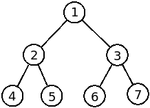

[to understand the context of this problem, you should read the class #07 exercise sheet]
A former professor of Algorithms and Data Structures had many examples of integer binary trees stored to show to his students. What he did was simply store the preorder and inorder representation of the trees (not indicating empty trees). As he always used different values in each node, this representation was enough to completely define the tree!
Recall how to write a tree in preorder and inorder:

For instance, for the figure above, we have the following representations:
The new teacher of the subject wants to restore the trees and needs your help!
Given the preorder and inorder representation of a binary tree your task is to reconstruct the tree. After that, you only need to show the postorder representation of the tree to show you were able to reconstruct it. Since the new professor is interested in knowing the number of leaves of the tree, you also need to compute it.
Recall how to write a tree in postorder:
The first input line contains an integer T, indicating the number of trees to consider.
Each tree is indicated by three lines:
You can assume all the integer values of the same tree will be different and will fit on a normal int type.
For each tree in the input the output should be:
Note that there should be a single space between the numbers of the postorder representation (and no space after the last number)
The following limits are guaranteed in all the test cases that will be given to your program:
| 1 ≤ T ≤ 5 | Number of trees in the input | |
| 1 ≤ N ≤ 50 | Number of nodes in one tree |
| Example Input | Example Output |
4 7 1 2 4 5 3 6 7 4 2 5 1 6 3 7 3 1 2 3 1 2 3 3 1 2 3 2 1 3 3 1 2 3 3 2 1 |
4 5 2 6 7 3 1 leaves = 4 3 2 1 leaves = 1 2 3 1 leaves = 2 3 2 1 leaves = 1 |